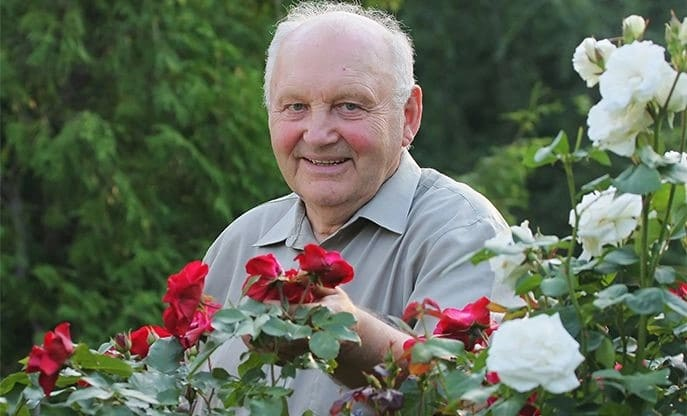

O nouă metodă de regenerare a auzului care distruge piața aparatelor auditive? Mai mulți specialiști ORL eminenți confirmă acest fapt fără nici o îndoială. Împreună cu crearea formulei naturale macro-moleculare a românului, a intervenit descoperirea mult așteptată pentru auzul bun.
Deja peste 14 mii de utilizatorii ai acestui mod și-au regenerat celulele auditive în decurs de 28 de zile. Practic, ei și-au recuperat acuitatea auditiva de la 20-25 de ani. Chiar și cei care erau amenințați cu surzenia totală. Cum este posibil?
Prof. George Brumaru (expert în domeniul biologiei moleculare) a decis să-și elibereze mama de surditatea progresivă și să-i redea auzul bun – și acesta a fost începutul revoluției în domeniul laringologiei. Profesorul, după 11 luni de cercetări de laborator, a creat formula naturală, sigură și ușor utilizată pentru întărirea auzului.
Revistele medicale profesionale au salutat deja acest mijloc ca „realizarea de pionierat din laringologie”, iar profesorul pentru relizările sale a obținut nominalizarea pentru Premiul Best Hearing Customer Choice Award. Datorită acțiunii formulei sale, chiar și persoanele cu o pierdere puternică de auz, își pot regenera celulele auditive, recupera capacitatea naturală de a auzi și se pot elibera de necesitatea purtării aparatului auditiv.
Revistele medicale profesionale au salutat deja acest mijloc ca „realizarea de pionierat din laringologie”, iar profesorul pentru relizările sale a obținut nominalizarea pentru Premiul Best Hearing Customer Choice Award. Datorită acțiunii formulei sale, chiar și persoanele cu o pierdere puternică de auz, își pot regenera celulele auditive, recupera capacitatea naturală de a auzi și se pot elibera de necesitatea purtării aparatului auditiv.
„Aparatele auditive sunt bani aruncați în noroi!” Care sunt motivele pentru a gândi așa?
Aceste cuvinte sunt confirmate deja de peste 14 mii de utilizatori mulțumiți ai formulei macro-moleculare pentru reînnoirea auzului, care au renunțat deja la aparatele lor auditive. De aceea am decis să luăm sub lupă aceste dispozitive. Și mai exact, să verificăm care sunt defectele acestora și cu ce trebuie să se lupte persoanele surde care utilizează aceste aparate zi de zi. Iată rezultatele:
Aparatul auditiv este scump
Costul aparatului este de la 2 până la 12 mii de lei și nu este un cost unic. Sunt necesare de asemenea bateriile, al căror cost anual este de peste 400 de lei! Chiar și dacă cineva își permite să dea acești bani ușor, acest lucru nu evită alte defecte ale acesui dispozitiv.
Provoacă rușine și disconfort
Persoanele care poartă aparate auditive suferă, pentru că sunt considerate ca persoane cu handicap. Le pare pur și simplu rău, când oamenii de pe stradă privesc cu milă spunând „Ce îi iese din ureche?”
Emit un scârțâit obositor
Persoanele care utilizează aparate auditive se plând de o calitate fatală a sunetului auzit. Aparatul emitea fluierături supărătoare, care provocau iritabilitate și stres.
Este o cauză de infecție care aprofundează surditatea
În aparat se pot dezvolta ciuperci, care provoacă infecții periculoase pentru ureche. Acestea prin urmare slăbesc mai mult capacitatea auzului.
Amplifică sunetul numai în momentul purtării
Aparatul trebuie scos în momentul contactului cu apa, de exemplu înainte de baie. Se scoate de asemenea noaptea. Nu oferă posibilitatea de recuperare a auzului permanent.
Tocmai de aceea recuperarea macro-moleculară al prof. George Brumaru este o adevărată descoperire în lupta pentru un auz bun
Aparatele auditive amplifica în mod artificial sunetele în timpul purtării acestora. În schimb, modul lui prof. Brumaru reînnoiește celulele auditive, redând capacitatea naturală de a auzi fără aparat. Ingredientele conținute în acest produs, au proprietăți de regenerare puternice. Luarea zilnică a acestor capsule duce la recuperarea acuității auditive chiar și la persoanele cu o pierdere severă a auzului.
Aparatele auditive amplifica în mod artificial sunetele pe durata purtării acestora. În schimb, modul lui prof. Brumaru reînnoiește celulele auditive, redând capacitatea naturală de a auzi fără aparat. Ingredientele conținute în acest produs, au proprietăți de regenerare puternice. Luarea zilnică a acestor capsule duce la recuperarea acuității auditive chiar și la persoanele cu o pierdere severă a auzului.
Fiecare poate să-și recupereze 100% auzul acum
Formula este disponibilă deja în vânzarea cu amănuntul, sub denumirea de . Utilizarea acestui remediu este pe deplin sigură pentru organism, fapt dovedit de cercetările suplimentare ale centrului de cercetare german din Stuttgart. Aceste cercetări au indicat de asemenea că recuperarea are o eficacitate de peste 98%. Datorită acestuia, persoanele cu vârsta între 38-93 de ani, în numai 28 de zile au avut efecte spectaculoase în combaterea pierderilor auditive. Indiferent de vârsta lor, cauza și durata de apariție a problemelor cu auzul.
Produsul este disponibil în vânzarea cu amănuntul, sub denumirea de . Utilizarea acestuia este pe deplin sigură pentru organism, fapt dovedit de cercetările suplimentare ale centrului de cercetare german din Stuttgart. Aceste cercetări au indicat de asemenea că recuperarea are o eficacitate de peste 98%. Datorită acestuia, persoanele cu vârsta între 38-93 de ani, în numai 28 de zile au avut efecte spectaculoase în combaterea pierderilor auditive. Indiferent de vârsta lor, cauza și durata de apariție a problemelor cu auzul.
Eficacitate confirmată
Aceste persoane, imediat după utilizarea formulei și-au curățat canalul auditiv. Datorită acestuia și-au amplificat auzul cu până a 50% și au început să capteze o gamă mai deplină de sunete, pe spații mari. În următoarele zile, aceste persoane și-au mărit sensibilitatea auzului la vorba umană, ca rezultat încep să audă discuțiile mai clar, chiar și în zgomotul stradal. După care au scăpat de durerile de cap și de murmurele din urechi, provocate de impuritățile canalului auditiv.
Ca efect, și-au redus solicitările centrelor auditive din creier cu până la 80% și și-au recuperat de 3 ori mai multă energie. Dar asta nu este totul. După 28 de zile, participanții cercetărilor au recunoscut în unanimitate că auzul lor s-a îmbunătăţit. Astăzi aud exact așa cum auzeau la vârsta de 20-25 de ani!
Efectele documentate ale remediului vorbesc de la sine:
auz cu 50% mai bun de la distanță
regenerarea auzului - înțelegerea clară a vorbirii
auzirea șoaptelor și a tonurilor joase devine de 15 ori mai bună
redarea acuității auzului a vârstei de 20-25 de ani
săptămâna 1
săptămâna 2
săptămâna 3
săptămâna 4
uauz cu 50% mai bun de la distanță
regenerarea auzului - înțelegerea clară a vorbirii
auzirea șoaptelor și a tonurilor joase devine de 15 ori mai bună
redarea acuității auzului a vârstei de 20-25 de ani
săptămâna 1
săptămâna 2
săptămâna 3
săptămâna 4
săptămâna 1. – confortul auzului se mărește cu 50%, un auz mai bun de la distanță
săptămâna 3. – audibilitate îmbunătățită a șoaptelor și a tonurilor joase de 15 ori, reducerea zgomotelor din urechi
săptămâna 4. – eliminarea solicitării centrelor de auz din creier, recuperarea aptitudinii auditive a vârstei de 20-25 de ani
Domnul Ioan Pintea (72 de ani) din Bistrița, este unul dintre primele persoane din România care au utilizat :

„La mine problema cu auzul a apărut de mult, după vârsta de 40 de ani. Credeam că este normal – îmbătrânesc, așadar aud mai prost. Însă, după câțiva ani am încetat să mai înțeleg ce mi se spune. Îmi era rușine mereu să repet: Ce? Poftim? Poftim? Aveam chiar și un aparat auditiv. Am dat pe el o avere, adică aproape 2 pensii, dar și asta nu a ajutat! Nu vroiam operație. Cum să taie cu bisturiul în ureche? La timp am aflat de . Acum știu că dacă nu profitam de acest remediu – făceam greșeala vieții. Eram surd, dar au fost suficiente 4 săptămâni să aud chiar și șoaptele fără aparat! Pot fără probleme să mă uit la televizor, să ascult radioul și să vorbesc la telefon. În sfârșit, aud normal oamenii pe stradă, în magazin sau autobuz. Este o mare plăcere să aud din nou zgomotele copacilor și cântecele păsărilor din parc. Multe mulțumiri.”
Ion Mihalache,
(72 de ani) Iași
Primul român care a utilizat
i
Problemele cu auzul au apărut la mine de mult timp, după vârsta de 40 de ani. Credeam că este normal – îmbătrânesc, așadar aud mai prost. Însă, după câțiva ani am încetat să mai înțeleg ce mi se spune. Îmi era rușine mereu să repet: Ce? Poftim? Poftim?
Aveam chiar și un aparat auditiv. Am dat pe el o avere, adică aproape 2 pensii, dar și asta nu a ajutat! Nu vroiam operație. Cum să taie cu bisturiul în ureche?
La timp am aflat de . Acum știu că dacă nu profitam de acest remediu – făceam greșeala vieții. Eram surd, dar au fost suficiente 4 săptămâni să aud chiar și șoaptele fără aparat!
Pot fără probleme să mă uit la televizor, să ascult radioul și să vorbesc la telefon. În sfârșit, aud normal oamenii pe stradă, în magazin sau autobuz. Este o mare plăcere să aud din nou zgomotele copacilor și cântecele păsărilor din parc. Multe mulțumiri.”
De ce să cheltui o avere pe aparatele auditive inutile, dacă auzul se poate recupera natural și ieftin?
Eficacitatea a fost dovedită de centrul de cercetare german din Stuttgart.
Vestea bună este că poate fi obținut prin participarea la clubul de reduceri, doar pentru . De reducere beneficiază toate persoanele născute după anul 1925. Oferta specială este valabilă până pe 17.11.2020. Puteți primi produsul prin intermediul site-ului de mai jos.
Cele mai fregvent citite din departamentul de LARINGOLOGIE:
Citiţi comentariile pentru articolul „Sfârșitul erei aparatelor auditive! Tratamentul inovator...”
Tudor
17.11.2020
Şi spun că românii nu au succese pe scara mondială. O realizare excepţională a lui George Brumaru. Bravo pentru concetăţeanul nostru
Corina
17.11.2020
Eu am folosit acest , l-am primit pentru participarea în cadrul clubului de reduceri şi am dat foarte puţin. Mi-am îmbunătaţit şi auzul! Mă simt ca o persoană nouă. Recomand din toată inima
Miruna
17.11.2020
Ceva nu e în regulă aici. De ce exact 28 şi îmi recuperez auzul? Sună ca o păcăleală
sofia
17.11.2020
@Miruna mereu când un Institut de Cercetare efectueaza teste clinice pentru un produs, oferă rezultate în perioade de timp. Acestea sunt directive de cercetare. Rezultatul mediu al grupei de test a fost, după cum se vede 28 de zile!!! Este un efect spectaculos.
Mihai
17.11.2020
Dragilor. Voi spune ca m-am chinuit cu aparatele auditive timp de aproape 6 ani. Anii de muncă în şantier şi-au făcut treaba şi auzul a început să slăbească. Pe aparatele mele auditive am dat în total 5 mii de lei, ceea ce şi aşa nu este mult, deşi ca pentru pensia de şantierist, doar statul ştie, înţelegeţi. Şi aceste aparate mă chinuiau pentru ca trebuia să le pun, să le scot, să am grijă de ele. Nepoţii se temeau de mine. Şi acum trei săptămâni am primit de la fiica mea acest remediu şi am aruncat acele aparate. Căci acum auzul mi-a revenit!! Nu ştiu dacă pentru toţi funcţionează, dar la mine a funcţionat! Merită să încercaţi
Andrei
17.11.2020
De asemenea am utilizat şi am profitat excepţional de asta. Folosesc numai doua săptămâni, dar deja aud cu jumătate mai bine. Fără aparat oameni buni, în magazin sau autobuz. În sfârşit pot trăi ca un om normal
Maria
17.11.2020
Intrând pe pagina asta nu am ateptat la asemenea minuni. Trebuie să iau şi eu aceste capsule în acest caz. Nu mai suport acest aparat auditiv îngrozitor. Îl ascund după păr, dar şi aşa se vede şi mereu acele zumzete şi pocnituri, poţi înnebuni. Vai mama, în sfârşit scăp de asta, MINUNAT
Victoria
17.11.2020
Lucrez într-o instituţie de stat şi mereu primesc vizitatori. Mereu îi rog să repete, simţindu-mă jenant. În final superiorul vroia să mă concedieze aşa că am cumpărat acea cutie urâta cu şnur care iese din ureche. Dar eu trebuia sa arăt bine. Căci nu sunt încă atât de bătrână, şi sunt şi doamnă. De câteva ori am făcut cunoştinţă cu cineva, dar mă ruşinam din cauza acestui aparat. În sfărşit îmi schimb viaţa, mulţumesc, mulţumesc!!!! :)
Mihail
17.11.2020
@Victoria, în aceste cazuri aspectul nu cred că are importanţă. Dar aveţi noroc, veţi simţi o mega diferenţă când terminaţi cursul cu . Eu am avut un defect mare de auz aşa că trebuia să folosesc o luna şi jumătate, pentru a-mi recupera auzul la 100%. Dar sunt fericit. Mi-am găsit în sfârşit un loc de muncă bun şi ies cu oamenii. Vă doresc acelaşi lucru. Succes!
Ana
17.11.2020
Mama mea are deja o vârstă înaintată, aşa că am o întrebare pentru cei care au utilizat, câţi ani aveţi, sunt aici persoane cu o vârstă înaintată de peste 80 de ani sau au familie/cunoscuţi? Vreau să ştiu dacă pentru mama este vreo şansă. Nu mă pot înţelege cu ea, nu aude telefonul. Vecinii bat în pereţi când se uita la televizor. Un coşmar, dar îmi pare foarte rău pentru ea. Vă rog să răspundeţi. Ana
Damian
17.11.2020
@Ana, la mine problemele cu auzul sunt moştenite şi am folosit şi eu şi tata, care are 93 de ani. Lui i s-a îmbunătăţit deja după trei săptămâni auzul. Am încetat să mă mai tem pentru el, nu mai este surd şi se descurcă singur. Aşadar îi recomand şi mamei tale
Ana
17.11.2020
@Daniel, iţi mulţumesc foarte mult pentru răspuns. În acest caz îi fac cadou mamei mele
Andreea
17.11.2020
De asemenea am folosit, mi-am întinerit auzul cu cel puţin 15 ani :) salutări şi recomand
Eva
17.11.2020
Cu plăcere aş profita dintr-o data, însă mi-e teama, pentru că nu ştiu dacă funcţionează. Am dat deja destul de mult pe modurile ineficiente
Eva
17.11.2020
A!! Tocmai am citit că pentru acest remediu se oferă garanţia satisfacţiei triple, în acest caz nu sunt îndoieli. Mă conving pe propria piele, sper să ajute :)
Fabian
17.11.2020
Sunt tânăr (36 de ani) şi de auz nu mă plâng, dar lucrez cu sistemele de sunet aşa că folosesc profilactic. Pentru că previne pierderea auzului. Aşa că dacă cineva lucrează în gălăgie mare îi recomand
George
17.11.2020
Tocmai astept livrarea, în curând voi scrie de efecte


Tudor
Şi spun că românii nu au succese pe scara mondială. O realizare excepţională a lui George Brumaru. Bravo pentru concetăţeanul nostru